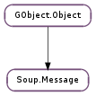

| static | new(method, uri_string) |
| static | new_from_uri(method, uri) |
| disable_feature(feature_type) | |
| finished() | |
| get_address() | |
| get_first_party() | |
| get_flags() | |
| get_http_version() | |
| get_https_status() | |
| get_priority() | |
| get_soup_request() | |
| get_uri() | |
| got_body() | |
| got_chunk(chunk) | |
| got_headers() | |
| got_informational() | |
| is_keepalive() | |
| restarted() | |
| set_chunk_allocator(allocator, *user_data) | |
| set_first_party(first_party) | |
| set_flags(flags) | |
| set_http_version(version) | |
| set_priority(priority) | |
| set_redirect(status_code, redirect_uri) | |
| set_request(content_type, req_use, req_body, req_length) | |
| set_response(content_type, resp_use, resp_body) | |
| set_status(status_code) | |
| set_status_full(status_code, reason_phrase) | |
| set_uri(uri) | |
| wrote_body() | |
| wrote_body_data(chunk) | |
| wrote_chunk() | |
| wrote_headers() | |
| wrote_informational() |
| Name | Type | Flags | Description |
|---|---|---|---|
| first-party | Soup.URI | r/w | The URI loaded in the application when the message was requested. |
| flags | Soup.MessageFlags | r/w | Various message options |
| http-version | Soup.HTTPVersion | r/w | The HTTP protocol version to use |
| method | str | r/w | The message’s HTTP method |
| priority | Soup.MessagePriority | r/w | The priority of the message |
| reason-phrase | str | r/w | The HTTP response reason phrase |
| request-body | Soup.MessageBody | r | The HTTP request content |
| request-headers | Soup.MessageHeaders | r | The HTTP request headers |
| response-body | Soup.MessageBody | r | The HTTP response content |
| response-headers | Soup.MessageHeaders | r | The HTTP response headers |
| server-side | bool | r/w/c | Whether or not the message is server-side rather than client-side |
| status-code | int | r/w | The HTTP response status code |
| tls-certificate | Gio.TlsCertificate | r/w | The TLS certificate associated with the message |
| tls-errors | Gio.TlsCertificateFlags | r/w | The verification errors on the message’s TLS certificate |
| uri | Soup.URI | r/w | The message’s Request-URI |
| Name | Parameters | Return | Description |
|---|---|---|---|
| content-sniffed | str, GLib.HashTable | This signal is emitted after Soup.Message ::got-headers, and before the first Soup.Message ::got-chunk. If content sniffing is disabled, or no content sniffing will be performed, due to the sniffer deciding to trust the Content-Type sent by the server, this signal is emitted immediately after Soup.Message ::got-headers, and type is None. If the Soup.ContentSniffer feature is enabled, and the sniffer decided to perform sniffing, the first Soup.Message ::got-chunk emission may be delayed, so that the sniffer has enough data to correctly sniff the content. It notified the library user that the content has been sniffed, and allows it to change the header contents in the message, if desired. After this signal is emitted, the data that was spooled so that sniffing could be done is delivered on the first emission of Soup.Message ::got-chunk. | |
| finished | Emitted when all HTTP processing is finished for a message. (After Soup.Message ::got-body for client-side messages, or after Soup.Message ::wrote-body for server-side messages.) | ||
| got-body | Emitted after receiving the complete message body. (For a server-side message, this means it has received the request body. For a client-side message, this means it has received the response body and is nearly done with the message.) See also Soup.Message.add_header_handler () and Soup.Message.add_status_code_handler (), which can be used to connect to a subset of emissions of this signal. | ||
| got-chunk | Soup.Buffer | Emitted after receiving a chunk of a message body. Note that “chunk” in this context means any subpiece of the body, not necessarily the specific HTTP 1.1 chunks sent by the other side. If you cancel or requeue msg while processing this signal, then the current HTTP I/O will be stopped after this signal emission finished, and msg ‘s connection will be closed. | |
| got-headers | Emitted after receiving all message headers for a message. (For a client-side message, this is after receiving the Status-Line and response headers; for a server-side message, it is after receiving the Request-Line and request headers.) See also Soup.Message.add_header_handler () and Soup.Message.add_status_code_handler (), which can be used to connect to a subset of emissions of this signal. If you cancel or requeue msg while processing this signal, then the current HTTP I/O will be stopped after this signal emission finished, and msg ‘s connection will be closed. (If you need to requeue a message–eg, after handling authentication or redirection–it is usually better to requeue it from a Soup.Message ::got-body handler rather than a Soup.Message ::got-headers handler, so that the existing HTTP connection can be reused.) | ||
| got-informational | Emitted after receiving a 1xx (Informational) response for a (client-side) message. The response_headers will be filled in with the headers associated with the informational response; however, those header values will be erased after this signal is done. If you cancel or requeue msg while processing this signal, then the current HTTP I/O will be stopped after this signal emission finished, and msg ‘s connection will be closed. | ||
| network-event | Gio.SocketClientEvent, Gio.IOStream | Emitted to indicate that some network-related event related to msg has occurred. This essentially proxies the Gio.SocketClient ::event signal, but only for events that occur while msg “owns” the connection; if msg is sent on an existing persistent connection, then this signal will not be emitted. (If you want to force the message to be sent on a new connection, set the Soup.MessageFlags.NEW_CONNECTION flag on it.) See Gio.SocketClient ::event for more information on what the different values of event correspond to, and what connection will be in each case. | |
| restarted | Emitted when a request that was already sent once is now being sent again (eg, because the first attempt received a redirection response, or because we needed to use authentication). | ||
| wrote-body | Emitted immediately after writing the complete body for a message. (For a client-side message, this means that libsoup is done writing and is now waiting for the response from the server. For a server-side message, this means that libsoup has finished writing the response and is nearly done with the message.) | ||
| wrote-body-data | Soup.Buffer | Emitted immediately after writing a portion of the message body to the network. Unlike Soup.Message ::wrote-chunk, this is emitted after every successful write() call, not only after finishing a complete “chunk”. | |
| wrote-chunk | Emitted immediately after writing a body chunk for a message. Note that this signal is not parallel to Soup.Message ::got-chunk ; it is emitted only when a complete chunk (added with Soup.MessageBody.append () or Soup.MessageBody.append_buffer ()) has been written. To get more useful continuous progress information, use Soup.Message ::wrote-body-data. | ||
| wrote-headers | Emitted immediately after writing the headers for a message. (For a client-side message, this is after writing the request headers; for a server-side message, it is after writing the response headers.) | ||
| wrote-informational | Emitted immediately after writing a 1xx (Informational) response for a (server-side) message. |
| Name | Type | Access |
|---|---|---|
| method | str | r |
| parent | GObject.Object | r |
| reason_phrase | str | r |
| request_body | Soup.MessageBody | r |
| request_headers | Soup.MessageHeaders | r |
| response_body | Soup.MessageBody | r |
| response_headers | Soup.MessageHeaders | r |
| status_code | int | r |
Bases: GObject.Object
Represents an HTTP message being sent or received.
status_code will normally be a Soup.Status value, eg, Soup.Status.OK, though of course it might actually be an unknown status code. reason_phrase is the actual text returned from the server, which may or may not correspond to the “standard” description of status_code. At any rate, it is almost certainly not localized, and not very descriptive even if it is in the user’s language; you should not use reason_phrase in user-visible messages. Rather, you should look at status_code, and determine an end-user-appropriate message based on that and on what you were trying to do.
As described in the Soup.MessageBody documentation, the request_body and response_body data fields will not necessarily be filled in at all times. When the body fields are filled in, they will be terminated with a ‘\0’ byte (which is not included in the length), so you can use them as ordinary C strings (assuming that you know that the body doesn’t have any other ‘\0’ bytes).
For a client-side Soup.Message, request_body ‘s data is usually filled in right before libsoup writes the request to the network, but you should not count on this; use Soup.MessageBody.flatten () if you want to ensure that data is filled in. If you are not using Soup.Request to read the response, then response_body ‘s data will be filled in before Soup.Message ::finished is emitted. (If you are using Soup.Request, then the message body is not accumulated by default, so response_body ‘s data will always be None.)
For a server-side Soup.Message, request_body ‘s %data will be filled in before Soup.Message ::got-body is emitted.
To prevent the %data field from being filled in at all (eg, if you are handling the data from a Soup.Message ::got-chunk, and so don’t need to see it all at the end), call Soup.MessageBody.set_accumulate () on response_body or request_body as appropriate, passing False.
| Parameters: | |
|---|---|
| Returns: | the new Soup.Message (or None if uri could not be parsed). |
| Return type: |
Creates a new empty Soup.Message, which will connect to uri
| Parameters: | |
|---|---|
| Returns: | the new Soup.Message |
| Return type: |
Creates a new empty Soup.Message, which will connect to uri
| Parameters: | feature_type (GObject.GType) – the GLib.Type of a Soup.SessionFeature |
|---|
This disables the actions of Soup.SessionFeature s with the given feature_type (or a subclass of that type) on msg, so that msg is processed as though the feature(s) hadn’t been added to the session. Eg, passing #SOUP_TYPE_PROXY_URI_RESOLVER for feature_type will disable proxy handling and cause msg to be sent directly to the indicated origin server, regardless of system proxy configuration.
You must call this before queueing msg on a session; calling it on a message that has already been queued is undefined. In particular, you cannot call this on a message that is being requeued after a redirect or authentication.
Emitted when all HTTP processing is finished for a message. (After Soup.Message ::got-body for client-side messages, or after Soup.Message ::wrote-body for server-side messages.)
| Returns: | the address msg ‘s URI points to |
|---|---|
| Return type: | Soup.Address |
Gets the address msg ‘s URI points to. After first setting the URI on a message, this will be unresolved, although the message’s session will resolve it before sending the message.
| Returns: | the msg ‘s first party Soup.URI |
|---|---|
| Return type: | Soup.URI |
Gets msg ‘s first-party Soup.URI
| Returns: | the flags |
|---|---|
| Return type: | Soup.MessageFlags |
Gets the flags on msg
| Returns: | the HTTP version |
|---|---|
| Return type: | Soup.HTTPVersion |
Gets the HTTP version of msg. This is the minimum of the version from the request and the version from the response.
| Returns: | True if msg used/attempted https, False if not |
|---|---|
| Return type: | bool, certificate: Gio.TlsCertificate, errors: Gio.TlsCertificateFlags |
If msg is using https (or attempted to use https but got Soup.Status.SSL_FAILED ), this retrieves the Gio.TlsCertificate associated with its connection, and the Gio.TlsCertificateFlags showing what problems, if any, have been found with that certificate.
| Returns: | the priority of the message. |
|---|---|
| Return type: | Soup.MessagePriority |
Retrieves the Soup.MessagePriority. If not set this value defaults to Soup.MessagePriority.NORMAL.
| Returns: | msg ‘s associated Soup.Request |
|---|---|
| Return type: | Soup.Request |
If msg is associated with a Soup.Request, this returns that request. Otherwise it returns None.
| Parameters: | chunk (Soup.Buffer) – |
|---|
| Returns: | True or False. |
|---|---|
| Return type: | bool |
Determines whether or not msg ‘s connection can be kept alive for further requests after processing msg, based on the HTTP version, Connection header, etc.
Emitted when a request that was already sent once is now being sent again (eg, because the first attempt received a redirection response, or because we needed to use authentication).
| Parameters: |
|
|---|
Sets an alternate chunk-allocation function to use when reading msg ‘s body when using the traditional (ie, non-Soup.Request -based) API. Every time data is available to read, libsoup will call allocator, which should return a Soup.Buffer. (See Soup.ChunkAllocator for additional details.) Libsoup will then read data from the network into that buffer, and update the buffer’s length to indicate how much data it read.
Generally, a custom chunk allocator would be used in conjunction with Soup.MessageBody.set_accumulate () False and Soup.Message ::got-chunk, as part of a strategy to avoid unnecessary copying of data. However, you cannot assume that every call to the allocator will be followed by a call to your Soup.Message ::got-chunk handler; if an I/O error occurs, then the buffer will be unreffed without ever having been used. If your buffer-allocation strategy requires special cleanup, use Soup.Buffer.new_with_owner () rather than doing the cleanup from the Soup.Message ::got-chunk handler.
The other thing to remember when using non-accumulating message bodies is that the buffer passed to the Soup.Message ::got-chunk handler will be unreffed after the handler returns, just as it would be in the non-custom-allocated case. If you want to hand the chunk data off to some other part of your program to use later, you’ll need to ref the Soup.Buffer (or its owner, in the Soup.Buffer.new_with_owner () case) to ensure that the data remains valid.
| Parameters: | first_party (Soup.URI) – the Soup.URI for the msg ‘s first party |
|---|
Sets first_party as the main document Soup.URI for msg. For details of when and how this is used refer to the documentation for Soup.CookieJarAcceptPolicy.
| Parameters: | flags (Soup.MessageFlags) – a set of Soup.MessageFlags values |
|---|
Sets the specified flags on msg.
| Parameters: | version (Soup.HTTPVersion) – the HTTP version |
|---|
Sets the HTTP version on msg. The default version is Soup.HTTPVersion.HTTP_1_1. Setting it to Soup.HTTPVersion.HTTP_1_0 will prevent certain functionality from being used.
| Parameters: | priority (Soup.MessagePriority) – the Soup.MessagePriority |
|---|
Sets the priority of a message. Note that this won’t have any effect unless used before the message is added to the session’s message processing queue.
The message will be placed just before any other previously added message with lower priority (messages with the same priority are processed on a FIFO basis).
Setting priorities does not currently work with Soup.SessionSync (or with synchronous messages on a plain Soup.Session ) because in the synchronous/blocking case, priority ends up being determined semi-randomly by thread scheduling.
| Parameters: |
|---|
Sets msg ‘s status_code to status_code and adds a Location header pointing to redirect_uri. Use this from a Soup.Server when you want to redirect the client to another URI.
redirect_uri can be a relative URI, in which case it is interpreted relative to msg ‘s current URI. In particular, if redirect_uri is just a path, it will replace the path and query of msg ‘s URI.
| Parameters: |
|
|---|
Convenience function to set the request body of a Soup.Message. If content_type is None, the request body must be empty as well.
| Parameters: |
|
|---|
Convenience function to set the response body of a Soup.Message. If content_type is None, the response body must be empty as well.
| Parameters: | status_code (int) – an HTTP status code |
|---|
Sets msg ‘s status code to status_code. If status_code is a known value, it will also set msg ‘s reason_phrase.
| Parameters: |
|---|
Sets msg ‘s status code and reason phrase.
| Parameters: | uri (Soup.URI) – the new Soup.URI |
|---|
Sets msg ‘s URI to uri. If msg has already been sent and you want to re-send it with the new URI, you need to call Soup.Session.requeue_message ().
| Parameters: | chunk (Soup.Buffer) – |
|---|